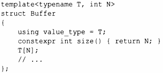
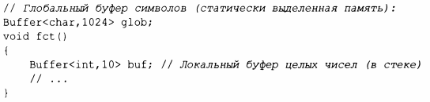

⇐6.2.1 Ограниченные аргументы шаблона (С++20) 6.2.3 Вывод аргументов шаблона⇒
В дополнение к аргументам-типам шаблоны могут получать аргументы-значения. Например:
Псевдоним (value type) и соnstехрr-функция предоставляют пользователям доступ (только для чтения) к аргументам шаблона.
Аргументы-значения полезны во многих контекстах. Например, Buffer позволяет нам создавать буфера произвольного размера без использования динамической памяти:
Аргумент-значение шаблона должен быть константным выражением.